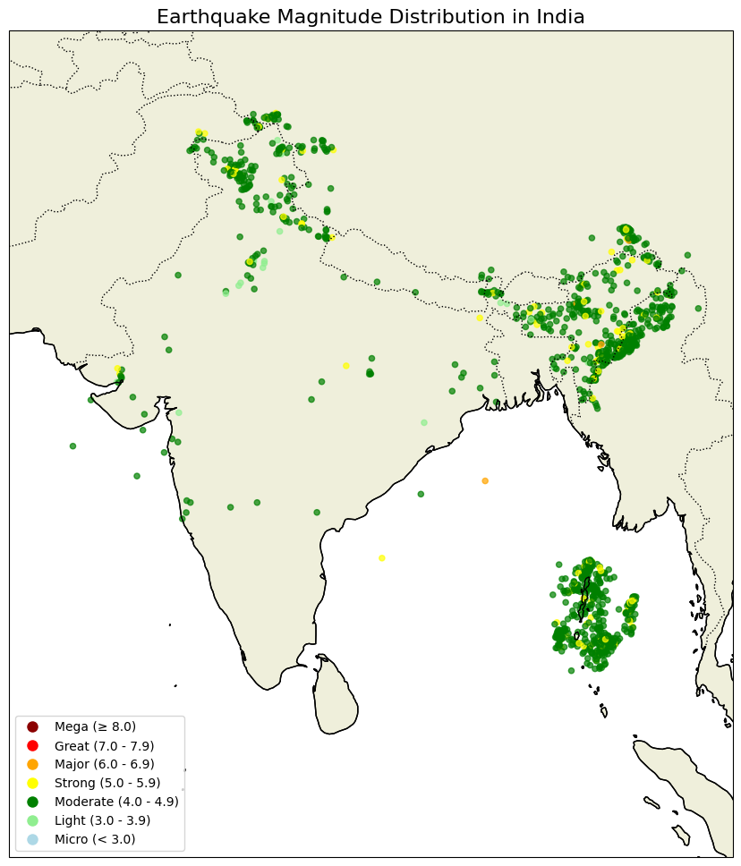

Data Analyst_ — I turn messy data into decisions that matter.
I started my career trying to make sense of research datasets at CSIR CBRI — one of India's leading structural engineering institutes. Writing SQL queries to clean survey data turned into something bigger: building the data infrastructure that teams actually relied on to make funding and policy decisions.
That's when I understood what good data work really means. It's not about the tools — it's about reducing the uncertainty that slows teams down.
Since then, I've moved into financial services, working with Morgan Stanley's operations team through Genpact. I analyse datasets with over a million records daily, build Power BI dashboards tracking operational KPIs, and architect data quality frameworks that prevent bad data from reaching decision-makers in the first place.
I'm currently exploring opportunities in Europe — particularly Germany, the Netherlands, and Ireland — where I want to bring this mix of technical depth and business pragmatism to data-driven organisations.
9 progressive business questions answered with advanced SQL — window functions, CTEs, cumulative sums, MoM growth analysis, and demographic spend breakdowns on 1.3M+ real transactions.
Upload any PDF and ask natural language questions. Built with Pinecone vector search + Cohere LLM for answer generation. Fully Dockerized with Streamlit UI.

10 years of USGS seismic data for India — EDA, interactive geospatial maps, and multi-model ML classification (RF, SVM, LR, Decision Tree) achieving ~90% accuracy.
End-to-end Excel analytics: raw data cleaning → pivot tables → interactive dashboard with slicers. Reveals highest-converting customer segments by age, income, and commute behaviour.
dbt + BigQuery ELT Pipeline · Customer Cohort Analysis · Financial Analytics Platform
I'm currently open to full-time data analyst and senior data analyst roles in Europe — particularly Germany, the Netherlands, and Ireland. Remote, hybrid, or relocation — all open.
I respond within 24 hours. The best way to reach me is LinkedIn or email.